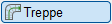
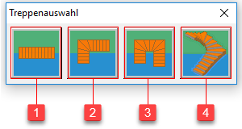
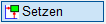
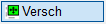
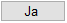

")
Konstruktion und Bewehrung einer Treppe mittels vordefiniertem Treppentyp. Öffnet den Dialog Treppenauswahl.

|
Nach Auswahl des Treppentyps (Dialog Treppenauswahl) wird der entsprechende Konfigurationsdialog bzw. ein separates Anwendungsfenster für den gewählten Treppentyp geöffnet.
1.Treppe konfigurieren und Daten übernehmen
§Konfigurieren Sie die Geometrie- und Bewehrungsdaten im Dialog und klicken Sie im Dialog auf die Schaltfläche Zeichenprogramm, um die Daten nach ISBCAD zu übernehmen.
Der Treppengrundriss wird als Rahmen an den Cursor gehängt.
2.Treppengrundriss platzieren und ausrichten
§Wählen Sie gegebenenfalls die Folie aus, auf der die Treppe gezeichnet werden soll.
Optionen (im Funktionsbereich):
|
Zeichnet die Treppe auf der aktuellen Folie (s. Untere Menüleiste). Hinweis: Wenn AutFol eingestellt ist, werden die Elemente in Folie 0 abgelegt. |
|
Auswahl einer vorhandenen Folie oder eine neue Folie anlegen und verwenden. |


§Wählen Sie, wie die Treppe in der Zeichnung abgesetzt werden soll. [Rechteck verschieben].
Genau platzieren  §Richten Sie den Treppengrundriss gegebenenfalls aus oder bestätigen Sie die Abfragen mit Rechtsklick. [Drehwinkel; Drehwinkel; Spiegelwinkel]. §Bestimmen Sie den Referenzpunkt der zu platzierenden Treppe durch Anklicken. [X-Refpu.Obj]; [Y-Refpu.Obj]. -Wenn Sie zwei verschiedene Punkte anklicken, wird der X-Wert des ersten Elementes und der Y-Wert des zweiten Elementes genommen. -Soll der Referenzpunkt mit Abstand abgesetzt werden, benutzen Sie die Funktion Retan. -Ist der Bereich schräg angeordnet, ist es ratsam, das Arbeitskoordinatensystem zu drehen. Alternativ können Sie auch die Hilfsfunktion S [Schnitt] verwenden. Tippen Sie in das Eingabefeld ein s ein und klicken Sie anschließend zwei Schrägen an. Achten Sie darauf, bei beiden Parametern dieselbe Hilfsfunktion einzugeben! §Klicken Sie die Koordinaten für die endgültige Lage an. [X-Refpu.Neu]; [Y-Refpu.Neu]. Die eingefügte Zeichnung wird an den Referenzpunkten platziert. Sie können sofort eine weitere Zeichnung hinzufügen. |
Beliebig platzieren  §Platzieren Sie den Rahmen per Mausklick an der gewünschten Stelle. |
§Korrektur?
|
Der Treppenquerschnitt wird abgelegt. Sie können mit der Platzierung der Querschnittsdarstellung fortfahren. Bei der 3D-Treppe werden alle Ansichten entsprechend Ihren Angaben platziert; ISBCAD wechselt in das Menü Option. |
 |
Wiederholen Sie die Angaben zum Platzieren und Ausrichten des Treppenquerschnittes. |

Die ermittelte Bewehrung kann mit den Menüs des allgemeinen Bewehrungsprogrammes weiterbearbeitet werden. Das gilt insbesondere den Auszügen für die Längsbewehrung. Sie können die Form der unteren und oberen Bewehrung mit [Formst | ForZus → zusamm] in eine einzige Auszugsform überführen und über [Konst1 | Texte ändern] die Angabe der laufenden Meter auf einen sinnvollen Wert aufrunden. Diese Änderung wird in der Stahlliste folgerichtig weiterbehandelt.